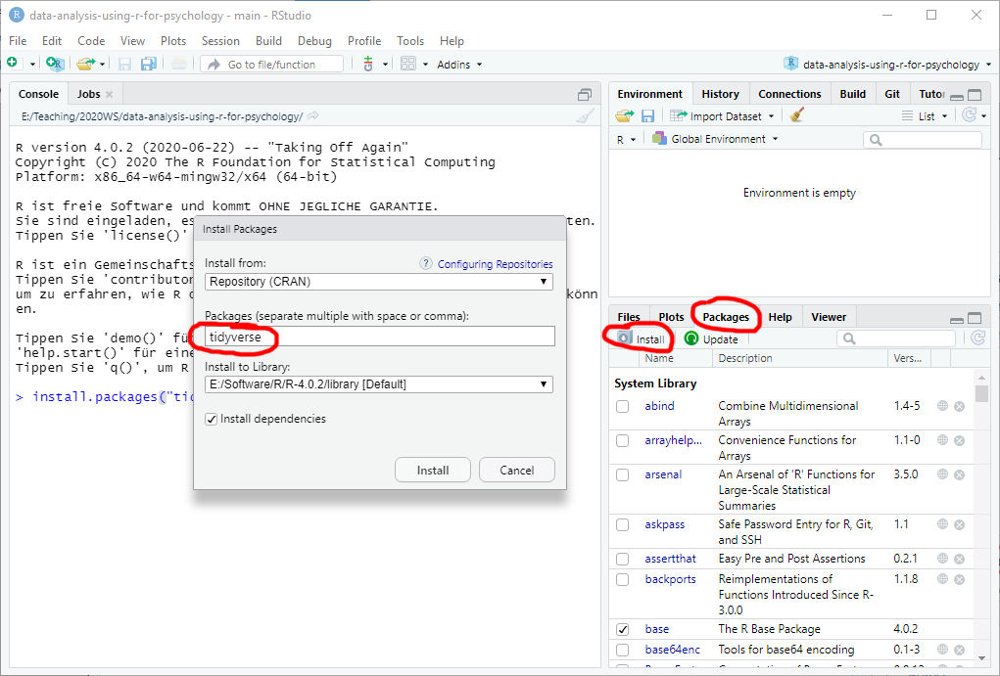

Getting Started
Installing R
Go to r-project.org and download the current stable version of R for your platform. Run the installer, accepting all defaults. The installer will ask you whether you also want the 32-bit version to be installed alongside 64-bit. You probably won’t need 32-bit, so if space is at premium you can skip it. Otherwise, it will make very little difference.
Installing R-Studio
Go to rstudio.com and download RStudio Desktop Free edition for your platform. Install it using defaults. The R-Studio is an integrated development environment for R but you need to install R separately first! The R-Studio will automatically detect latest R that you have and, in case you have several versions of R installed, you will be able to alter that choice.
I will explain the necessary details on using R-Studio throughout the seminar but the official cheatsheet is an excellent, compact, and up-to-date source of information. In fact, R Studio has numerous cheatsheets that describe individual packages in a compact form.
Installing RTools
If you are using Windows, we might need Rtools for building and running some packages. You do not need to install it at the beginning, but when we will need it later, just following the link above, download the latest Rtools version, run the installer using the defaults and follow the instructions on that page to put Rtools on the PATH! (I do not repeat them here, because they might change).
Installing packages
The real power of R lies in a community-driven vast family of packages suitable for any occasion. The default repository used by R and R-Studio is The Comprehensive R Archive Network (a.k.a. CRAN). It has very strict requirements for submitted packages, which makes it very annoying for the authors but ensures high quality of most packages, as they tend to be well-documented and come with example data and code. We will use CRAN as a sole source for packages, but there are alternatives, such as Bioconductor that might have a package that is missing at CRAN. The Bioconductor relies on its own package manager, so you will need to consult latest manual on their website.
To install CRAN package you have two alternatives: via command line function or via R-Studio package manager interface. In the former case, go to Console tab and type install.packages("package-name"), for example install.packages("tidyverse"), and press Enter.

Alternatively, go to Packages tab, click on Install button, enter the package name in the window, which has autocomplete to help you, and press Install.

In some cases, R will ask whether you want to install packages from source. In this case, it will grab the source code and compile the package, which takes time and requires RTools. In most cases, you can say “No” to install a pre-build binary version. The binary version will be slightly outdated but the emphasis is on slightly.
Please install the following packages:
tidyverse: includes packages from data creation (tibble), reading (readr), wrangling (dplyr,tidyr), plotting (ggplot2). Plus type specific packages (stringrfor strings,forcatsfor factors) and functional programming (purrr).rmarkdown: package for working with RMarkdown notebooks, which will we use to create reproducible analysis.fs: file system utilities.
Keeping R and packages up-to-date
R and packages are getting constantly improved, so it is a good idea to regularly update them. For packages, you can use Tools / Check for Packages Updates... menu in R-Studio. To update R and, optionally, packages, you can use installr package that can install newest R (but it keeps old version!) optionally copying your entire library of packages, update packages, etc. For R-Studio itself, use Help / Check for Updates menu and install a newer version, if it is available (it is generally a good idea to keep your R-Studio in the newest state).